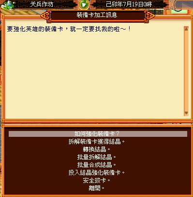

最後更新時間： 2026-02-23
連結：https://mo.lager.com.tw/Mystina/Mo_Ha_hero/new_equipments/index.html
各城鎮的加工房可拆解裝備卡。每拆解一次需一萬元，拆出的結晶種類由裝備卡等級決定。
| 名稱 | 說明 | 可強化等級 |
|---|---|---|
| 結晶粉末 | 3個合成1個結晶碎片 | - |
| 結晶碎片 | 3個合成1個標準結晶 | 1~20級 |
| 標準結晶 | 3個合成1個完美結晶 | 21~40級 |
| 完美結晶 | 可用於 41 級以上 | 41級以上 |
| 等級 | 搭配道具 | 對應結晶 |
|---|---|---|
| 1 ~ 20等 | 金色結晶石 | 結晶碎片 |
| 21 ~ 30等 | 紫紅結晶塊 | 標準結晶 |
| 31 ~ 40等 | 亮色結晶片 | 標準結晶 |
| 41 ~ 50等 | 淡色結晶粉 | 完美結晶 |
| 裝備卡等級 | 可拆解出結晶 |
|---|---|
| 1~20級 | 結晶粉末、結晶碎片 |
| 30~40級 | 結晶碎片、標準結晶 |
| 50~60級 | 標準結晶、完美結晶 |
結晶轉換：
3 結晶粉末 ⇆ 1 結晶碎片
3 結晶碎片 ⇆ 1 標準結晶
3 標準結晶 ⇆ 1 完美結晶
拔卡時需召喚英雄，並消耗 100 名聲 與 50 萬元。
| 等級 | 成功 | 失敗 |
|---|---|---|
| 結晶碎片階段 | ||
| 10等 | +1 ~ +2 | -1 |
| 20等 | +1 ~ +2 | -1 |
| 標準結晶階段 | ||
| 30等 | +3 ~ +5 | -1 ~ -2 |
| 40等 | +5 ~ +6 | -2 ~ -3 |
| 完美結晶階段 | ||
| 50等 | +14 ~ +16 | -4 ~ -5 |
| 55等 | +20 ~ +22 | -5 ~ -6 |
| 60等 | +20 ~ +22 | -5 ~ -6 |
| 等級 | 成功 | 失敗 |
|---|---|---|
| 結晶碎片階段 | ||
| 10等 | +30 ~ +60 | -15 |
| 20等 | +30 ~ +60 | -15 |
| 標準結晶階段 | ||
| 30等 | +90 ~ +150 | -15 ~ -30 |
| 40等 | +150 ~ +180 | -30 ~ -45 |
| 完美結晶階段 | ||
| 50等 | +420 ~ +480 | -60 ~ -75 |
